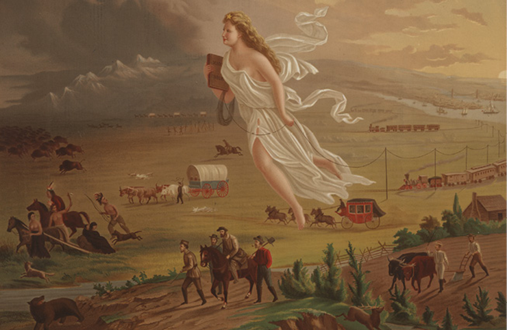
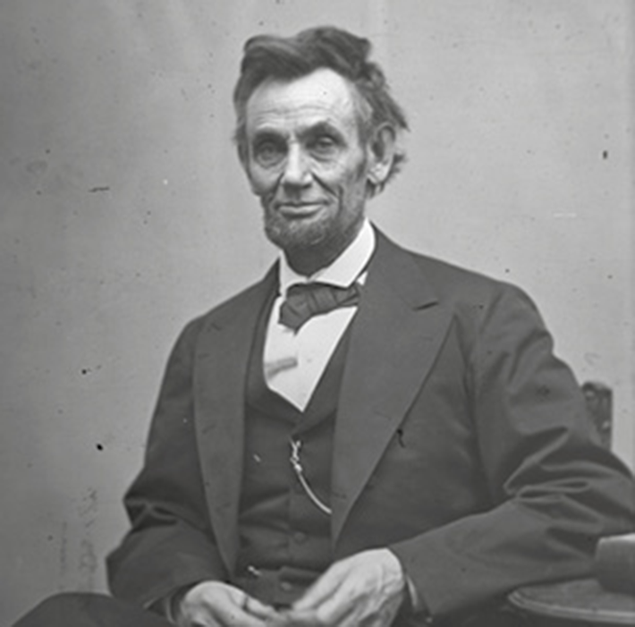
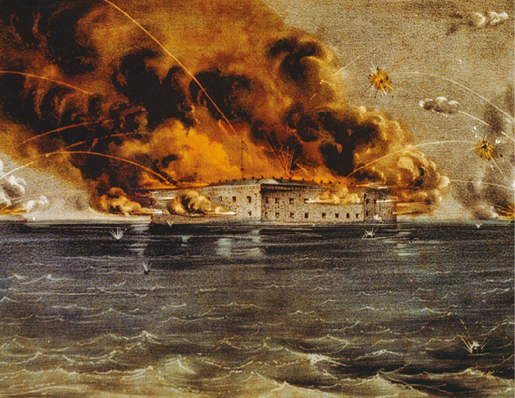
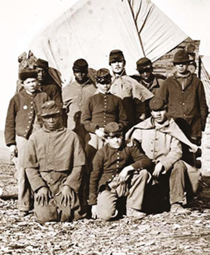
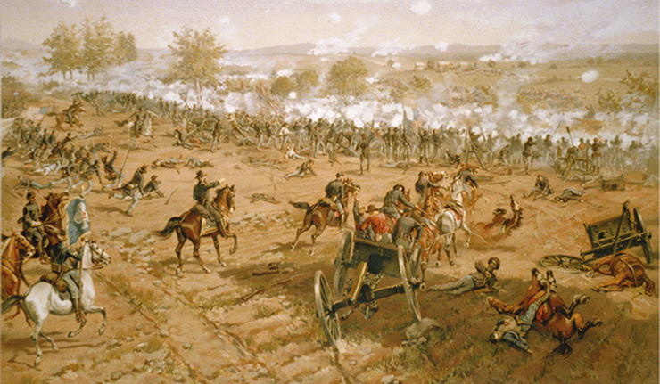
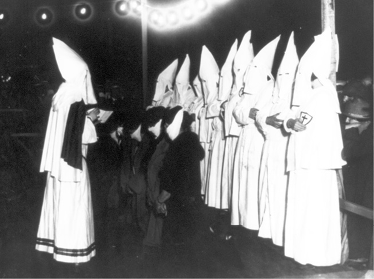
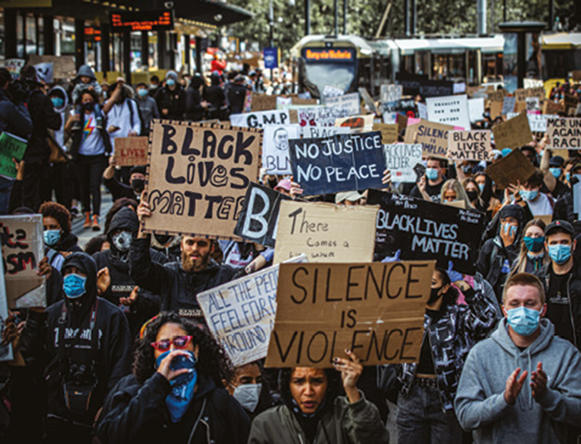

Mesmo após a independência, os Estados Unidos não estavam perfeitamente organizados e ainda não havia sido construído, na população, um sentimento de pertencimento à nova nação.
Inicialmente, os primeiros líderes dos Estados Unidos, George Washington (1789-1797) e John Adams (1797-1801), tiveram que lidar, sobretudo, com os efeitos da guerra pela independência. Assim, somente a partir do terceiro presidente, Thomas Jefferson (1801-1809), iniciou-se um processo mais consistente de formação de uma República no país.
Os Estados Unidos da América formam uma nação que se desenvolveu com base em muitos contrastes: ao mesmo tempo que foi fundada por imigrantes e abrigou milhões deles, também aniquilou as populações indígenas do seu território e manteve, até a década de 1960, uma política segregacionista em relação à população negra, o que, ainda hoje, revela seus efeitos cruéis.
- Refletindo sobre a formação dos Estados Unidos, é possível fazer um comparativo com a história dos demais países da América, como o Brasil, por exemplo?
- Podemos dizer que a desigualdade social e o preconceito racial presentes nos Estados Unidos, e também no Brasil, atualmente são expressões da escravidão dos povos de origem africana?
- Que fatores históricos podem ter conduzido os Estados Unidos a se tornar a maior potência do mundo?
Neste capítulo serão abordadas as habilidades EM13CHS101 , EM13CHS102 , EM13CHS204 .
A conquista do território
Para os Estados Unidos, o início do século XIX foi marcado pela expansão territorial: já em 1803, o presidente Thomas Jefferson comprou a Louisiana da França.
Entretanto, nesse período, o contexto político europeu, com disputas entre França e Inglaterra, colocava os Estados Unidos em uma posição complicada, pois mantinha parceria comercial com ambas as nações. Assim, de um lado estava a França, um império em expansão; de outro lado, a poderosa Marinha de guerra britânica.
Tentando contornar essa situação, em 1805, o Congresso dos Estados Unidos proibiu a entrada de certos produtos ingleses no país. Mais tarde, em 1809, o presidente James Madison (1809-1817) promulgou a Lei de Proibição ao Comércio, em que os comerciantes estavam autorizados a comercializar com qualquer nação, exceto França e Inglaterra, no intuito de que ambas reduzissem suas restrições.
No entanto, essas medidas não funcionaram como o governo estadunidense esperava, e isso gerou um embaraço diplomático aos Estados Unidos. Diante desse cenário, o governo passou a cogitar uma guerra, a fim de recuperar a honra do país e a retomada de seu progresso. Dessa forma, em 1812, foi declarada guerra contra a Inglaterra. Esse evento ficou conhecido como Guerra Anglo-americana , ou Segunda Guerra pela Independência.
As forças inglesas eram superiores às dos Estados Unidos, que foram derrotados em diversas batalhas. Contudo, apesar de estar em vantagem, a Inglaterra não tinha interesse em manter um conflito na América enquanto enfrentava Napoleão Bonaparte na Europa. No final de 1814, a guerra foi encerrada com um tratado, que frustrou a expectativa estadunidense de anexação do Canadá.
Além disso, as guerras napoleônicas também diminuíram a presença da Espanha na região da Flórida, de modo que o governo estadunidense pressionou os espanhóis para cederem a região. Em 1819, por meio da assinatura do Tratado de Adams-Onís, a Flórida foi vendida aos Estados Unidos por 5 milhões de dólares.
Doutrina Monroe
Com a derrota de Napoleão em 1815, a Europa foi marcada por um intenso regresso conservador: fronteiras foram retomadas e antigos monarcas restituídos ao trono.
Diante da onda conservadora, o presidente dos Estados Unidos, James Monroe (1817-1825), buscou adotar uma postura diplomática mais neutra. Para isso, em 1813, ele anunciou a famosa Doutrina Monroe , que defendia o princípio da não intervenção dos europeus na América em troca da não intervenção estadunidense nos assuntos europeus.
Por meio dessa doutrina, os Estados Unidos, então, colocaram-se como protetores e juízes de todas as questões que envolvessem países de norte a sul do continente americano. O temor era que as nações europeias tentassem subjugar as antigas colônias espanholas e assim colocassem em perigo a autonomia do seu território e de seus interesses econômicos em toda a América.
Por isso, a Doutrina Monroe foi uma das primeiras medidas tomadas pelos estadunidenses no sentido de uma política externa defensora de sua hegemonia no continente. Assim, o lema da Doutrina Monroe, “a América para os americanos”, pautou todos os seus esforços diplomáticos durante o século XIX.
Tempos de crescimento e desenvolvimento
Nas primeiras décadas do século XIX, enquanto a região Sul desenvolvia sua produção agrícola explorando a mão de obra escravizada, na região Norte prevalecia a mão de obra livre e assalariada. Com isso, o Norte passou por um rápido processo de industrialização da sua economia. A indústria têxtil foi a primeira a se desenvolver na região, a partir de 1790.
A industrialização também possibilitou o uso do barco a vapor e a introdução das ferrovias. Esses novos meios de transporte simbolizavam a ideia de progresso e possibilitaram a circulação mais rápida de pessoas e mercadorias pelo país.
Apesar disso, diferenças políticas começaram a ganhar força ao longo das primeiras décadas do século XIX. A expansão territorial ocorrida naquele período resultou na formação de novos estados. Com isso, os políticos estadunidenses começaram a discutir se esses estados deveriam seguir o escravismo do Sul ou o modelo de trabalho livre do Norte. Essas diferenças acabaram levando à organização de dois grandes partidos políticos nos Estados Unidos, o Republicano e o Democrata.
Além disso, os EUA ainda enfrentavam problemas relacionados aos indígenas e ao sistema escravista.
A questão indígena
A conquista do território norte-americano por colonos europeus foi implacável para as diversas tribos indígenas americanas que ocupavam aquela região. Estradas de ferro, fazendeiros, cidades, enfim, todas as estruturas de exploração das novas terras somadas às inúmeras armas de fogo possibilitaram um grande massacre das populações indígenas. A última grande tribo foi a dos apaches, que resistiu até o final do século XIX. A partir de então, não havia mais terras para os indígenas nem búfalos para fornecer carne e peles. Os poucos indígenas que restaram foram confinados em pequenas reservas e enfrentaram um processo de aculturação.
Em 1830, o governo dos Estados Unidos aprovou a Lei de Remoção Indígena , que deslocava as comunidades indígenas de seu território tradicional para a região de Oklahoma, em uma reserva criada pelo governo. Essa ação custou muito caro para os povos nativos: muitos morreram durante a viagem por conta do frio, de doenças e da fome; e, ao serem expulsos de suas terras, esses povos perdiam parte de suas tradições e costumes. Várias tribos resistiram a esse processo, mas, depois, foram massacradas pelas forças do governo.
As condições de vida nas reservas também eram precárias, e milhares de indígenas morreram por conta da desnutrição ou por doenças que se disseminavam com rapidez nesses territórios. Para os não indígenas, esse deslocamento resultou na abertura de milhões de hectares de terras para que a população branca pudesse se estabelecer e desenvolver atividades agrícolas.
A questão da escravidão
A escravidão não era uma unanimidade entre os estadunidenses; muitos indivíduos e grupos defendiam a abolição por acreditarem que a escravidão era um terrível mal moral para a nação. Em Nova York havia, desde a década de 1830, uma sociedade antiescravista.
Alguns abolicionistas apelavam para o aspecto moral, outros para questões de ordem religiosa. Os mais radicais defendiam o uso de violência na luta contra o escravismo. Todavia, a prática estava bastante arraigada na cultura e principalmente na economia de muitas regiões dos Estados Unidos, especialmente nos estados do Sul, como Geórgia, Maryland e Virgínia. As regiões produtoras de algodão e tabaco eram as que mais utilizavam a mão de obra escrava.
A questão da escravidão trazia ainda mais divisão em um jovem país que via seu território mergulhado em diferenças regionais. Havia uma grande necessidade de união ideológica para manter a coesão territorial. Alguns fatores de união começaram a despontar, como a Marcha para o Oeste e o imperialismo dos EUA, justificados a partir de um discurso religioso.
12 anos de escravidão.
Direção: Steve McQueen. 2013.
Classificação indicativa: 14 anos.
Esse filme conta a história de Solomon Northup, um negro livre nascido em Washington D.C. (norte dos EUA) que acabou sendo preso e vendido como escravizado no estado da Louisiana (sul dos EUA) no período que antecedeu a Guerra de Secessão.
Picking cotton on a Georgia plantation, 1858. Biblioteca do Congresso, Washington D.C., Estados Unidos. Foto de um grupo de escravizados trabalhando em uma plantação de algodão na Geórgia.
F.E. Lee Co./Library of Congress
O Destino Manifesto
A continuidade da expansão territorial estadunidense pautou-se na concepção religiosa de que Deus havia escolhido aquele povo para uma missão especial na Terra. Essa ideia ficou conhecida como Destino Manifesto , segundo a qual os estadunidenses tinham a divina missão de estender a visão de mundo que possuíam para os demais povos, considerados atrasados e que não conheciam a verdadeira fé e o verdadeiro Deus.
A origem dessa doutrina está na frase: “nosso destino manifesto é abraçar o continente”, publicada em uma revista de Nova York em 1845 para justificar a expansão dos Estados Unidos. Com isso, pretendia-se dizer que, devido à “natureza das coisas”, os Estados Unidos tinham que estender suas fronteiras para o Oeste e para o Sul, formando um Estado de dimensões continentais limitado pelos dois oceanos.
Um exemplo da expansão do país no período foi a conquista do Texas, região então controlada pelos mexicanos. Em 1836, o governo dos Estados Unidos enviou uma imensa tropa de soldados para a região que facilmente derrotou os mexicanos, obrigando-os a aceitar a perda do território.
CROFUTT, George A. Progresso americano , 1873. Cromolitografia. Biblioteca do Congresso, Washington D.C., Estados Unidos. A imagem, baseada na pintura de John Gast, é uma representação do Destino Manifesto; a crença de que os Estados Unidos devem se expandir do Atlântico para o Oceano Pacífico. Em 1872, o artista pintou uma cena em que pessoas se deslocam para o Oeste guiadas e protegidas por Columbia (que representa a América e está vestida com uma toga romana para representar o republicanismo clássico) e auxiliadas pela tecnologia (ferrovias, telégrafo). Columbia está trazendo a “luz” do Leste enquanto viaja em direção ao oeste “escurecido”.
George A. Crofutt/Library of Congress
Outra batalha ocorreu na região que se estendia das Montanhas Rochosas até o Pacífico. Os estadunidenses tinham grande interesse econômico na Califórnia, que também pertencia ao México. Após novos conflitos, os mexicanos acabaram assinando o Tratado de Guadalupe-Hidalgo em 1848, cedendo o Novo México e a Califórnia aos Estados Unidos.
Fonte: ARRUDA, José Jobson. Nova História moderna e contemporânea . Bauru: EDUSC, 2004. p. 21.
Guerra de Secessão (1861-1865)
A tensão entre os estados do Norte e os estados do Sul sobre o trabalho escravo chegou ao Congresso Nacional. Desse modo, uma nova legislação foi elaborada para manter unido um território tão vasto e com diferenças tão marcantes. Os estados do Norte estavam dispostos a barrar o crescimento da área de influência escravista, e os estados do Sul ameaçavam separar-se da União.
É importante destacar que os sentimentos advindos desse embate nem sempre eram antagônicos, pois havia em comum o desejo de ampliar o território nacional, aumentar as relações comerciais com nações vizinhas e fazer frente àqueles que tentassem impedir o avanço estadunidense.
Os estados do Sul dos Estados Unidos são: Alabama, Carolina do Norte, Carolina do Sul, Flórida, Geórgia, Louisiana, Mississippi, Tennessee, Texas e Virgínia; os estados do Kansas, Kentucky, Delaware, Maryland, Missouri e Virgínia Ocidental são estados de fronteira ; eram, portanto, considerados por algumas fontes como estados do Norte e, por outras, do Sul. Os estados do Norte são: Connecticut, Dakota do Norte, Dakota do Sul, Illinois, Indiana, Iowa, Maine, Massachusetts, Michigan, Minnesota, Nebraska, Nova York, Ohio, Pensilvânia, Rhode Island.
Abraham Lincoln, three-quarter length portrait, seated and holding his spectacles and a pencil, 1865, fotografia, Washington D.C., Estados Unidos.
Alexander Gardner/Library of CongressEm essência havia uma contradição muito marcante entre Sul e Norte que desencadeou, de fato, diversos conflitos. A região do Kansas foi o palco das primeiras e maiores desavenças. A disputa política na região entre escravistas e abolicionistas tomou grandes proporções, tornando-se fundamental para a escolha do novo presidente dos Estados Unidos nas eleições de 1860. Os democratas lançaram o nome de StephenDouglas; e os republicanos, de Abraham Lincoln, político favorável ao lema “solo, trabalho e homens livres” e vitorioso nas eleições.
Os grandes proprietários do sul tinham a intenção de alastrar a escravidão a todos os estados do Oeste, o que era combatido firmemente por Lincoln, embora ele não fosse um abolicionista declarado. Assim, a ideia de separação foi se tornando cada vez mais concreta. Em 1861, os estados do Sul se uniram e se proclamaram Estados Confederados da América .
Os conflitos armados começaram na Carolina do Sul, onde havia o Forte Sumter, que abrigava as tropas da União. Os confederados exigiram a retirada dessas tropas imediatamente. Como resposta, Lincoln enviou um pelotão de aproximadamente 80 000 soldados. Foi declarada então a Guerra da Secessão .
O início dessa guerra civil foi tratado com imenso otimismo de ambos os lados. O Norte contava com a vantagem de aproximadamente quatro soldados para cada um dos sulistas, além de possuírem as maiores empresas do país e uma malha ferroviária mais extensa. Em contrapartida, o Sul contava com grandes nomes da estratégia militar. Porém, com o tempo, apesar das diversas batalhas vencidas pelos sulistas, o investimento na guerra foi devastador para os estados confederados.
Lincoln propôs então uma abolição lenta, gradual e indenizada. O governo pagaria aos fazendeiros o valor de cada escravizado. O objetivo era manter a federação unida. Entretanto, os estados do Sul não aceitaram a proposta e decidiram defender a manutenção da escravidão. Com isso, o governo dos Estados Unidos passou a utilizar outras medidas para iniciar a abolição, como a Lei do Confisco (de bens: terras, fazendas, máquinas e escravizados). Isso aumentou a pressão sobre os estados do Sul.
Currier & Ives, Bombardeio ao Forte Sumter, Charleston Harbor: 12th & 13th of April, 1861 , 1861. Litografia. Biblioteca do Congresso, Washington D.C., Estados Unidos.
Currier & Ives/Library of Congress
Homestead Act
Em 1862, Lincoln conseguiu aprovar o Homestead Act (Lei de Terras). Por essa lei, um quarto de um distrito ainda não desenvolvido no Oeste (cerca de 400m2 de terra desocupada) seria entregue para qualquer pessoa maior de 21 anos – inclusive escravizados libertos – que não tivesse se rebelado contra a União e estivesse disposta a colonizar a região.
Criava-se então uma proposta de economia baseada na pequena propriedade policultora que utilizava mão de obra familiar. O interesse era diminuir o desemprego e minimizar a concentração de estrangeiros no leste do país. Tal proposta já tramitava no Congresso desde os anos 1850, porém os parlamentares representantes do Sul conseguiam impedir a medida, pois contrariava os interesses dos grandes proprietários de terras sulistas. Com a ausência desses parlamentares por conta da guerra civil, a lei foi aprovada.
As consequências dessa lei foram fundamentais para o sucesso econômico futuro dos Estados Unidos. Essa política favoreceu um grande número de pessoas, diminuindo a desigualdade e impedindo que houvesse a concentração de terras nas mãos de uma minoria de proprietários envolvidos com o sistema de plantation . Na prática, o Homestead Act significava uma espécie de reforma agrária, uma vez que facilitava o acesso à terra.
Soldados negros e brancos na Guerra da Secessão.
Alamy/Alamy/Fotoarena
Os escravizados na guerra civil
Os escravizados não foram passivos no processo que levou à abolição da escravatura nos Estados Unidos. Embora oprimidos pelo sistema, a resistência foi constante. Durante a guerra civil, sempre que as tropas da União invadiam uma região confederada, um grande número de afro-americanos fugiam das fazendas onde estavam sendo escravizados.
Muitos escravizados eram alfabetizados, o que se deve à obrigação religiosa de ler frequentemente a Bíblia, aspecto fundamental na doutrina protestante à qual os escravizados eram submetidos. Assim, eles passaram a ser leitores dos jornais abolicionistas, e estes, por sua vez, incentivavam a resistência e o fim da escravidão no país.
Em 1o de janeiro de 1863, foi proclamada a Lei de Emancipação dos Escravos , que era estendida a todos os domínios à medida que as tropas do Norte avançavam e venciam os embates. Em julho de 1863, ocorreu a decisiva Batalha de Gettysburg, no estado da Pensilvânia. Ela provocou a derrota das principais forças do Sul e permitiu ao Norte consolidar sua vitória. Em 1865 foi então promulgada a Décima Terceira Emenda da Constituição dos Estados Unidos, que proibiu a escravidão em todo o território estadunidense.
THULSTRUP, Thure de. Batalha de Gettysburg , 1887. Litografia. Biblioteca do Congresso, Washington D.C., Estados Unidos.
Thure De Thulstrup/Library of Congress
Tempo de reconstrução
A principal questão a ser trabalhada após o conflito foi sobre a reintegração dos territórios do Sul à União. As opiniões divergentes ampliavam-se, uma vez que a Constituição não tinha nenhuma cláusula que definisse tal questão. Não estava certo se a ação caberia ao presidente ou ao Congresso. Existiam defensores de uma total reintegração, e outros que defendiam uma reintegração mais moderada. Essa discussão também se estendia aos direitos dos escravizados libertos.
O presidente Abraham Lincoln não viveu para estabelecer as bases da reconstrução. No dia 14 de abril de 1865, foi assassinado durante uma apresentação de teatro em Washington D.C., atingido por um tiro disparado por John Wilkes Booth, um sulista inconformado com a derrota na guerra. O vice-presidente Andrew Johnson (1865-1869) assumiu o governo.
Ainda em 1865, foram aprovados nos estados do Sul os “Códigos Negros” (Black Codes), que aprofundaram a segregação racial, proibindo ex-escravizados de escolher onde trabalhar, de se reunir e se casar com brancos, de beber álcool e possuir armas de fogo. Caso essas determinações fossem descumpridas, eles poderiam receber pena de multas, castigos corporais e até ser vendidos em leilão. Posteriormente, os Códigos Negros expandiram seu escopo para incluir questões como o direito ao sufrágio, o uso de instalações públicas, instrução escolar e muitas outras medidas racistas, que ficaram conhecidas sob o nome genérico de Jim Crow Laws .
Nesse contexto, alguns grupos segregacionistas mais radicais se organizaram em torno da Ku Klux Klan (KKK), criada em Nashvile, em 1867. Tratava-se de um círculo fechado, excludente, do qual não apenas os negros eram combatidos, mas também os brancos que eram seus defensores, assim como chineses, judeus e outros grupos considerados inferiores.
Em seus rituais, os membros da KKK usavam como vestimenta lençóis brancos, simbolizando os senhores de escravizados mortos na Guerra da Secessão. O grupo era apoiado por proprietários de terras sulistas, mas seus integrantes eram majoritariamente brancos de baixa renda descontentes com a abolição e o desenrolar da guerra. Em 1882, o governo dos Estados Unidos declarou a KKK inconstitucional e ela foi enfraquecida.
Triangle Studio, First public appearance of women of the KKK on Long Island , 1924. Fotografia. Biblioteca do Congresso, Washington D.C., Estados Unidos. Mulheres (ajoelhadas) sendo iniciadas na Ku Klux Klan; ao fundo, pessoas assistem ao ritual.
Triangle Studio/Library of Congress
Infiltrado na Klan.
Direção: Spike Lee. 2018.
Classificação indicativa: 14 anos.
O filme Infiltrado na Klan narra a história real de um policial negro que, com o auxílio de um policial branco, conseguiu se infiltrar em uma célula da Ku Klux Klan na região do Colorado no final dos anos 1970. É uma reflexão bastante atual sobre o problema do racismo na sociedade estadunidense contemporânea.
Superando Jim Crow: a longa luta dos afro-americanos
O enfraquecimento da Ku Klux Klan não significou, contudo, o fim do racismo. O caminho para o reconhecimento de direitos aos afro-americanos foi longo, marcado por intensas lutas sociais.
Em 1865, a abolição da escravidão assegurou aos afro-americanos o direito de ir e vir, e entre as décadas de 1910 e 1920 teve início um movimento conhecido como “a grande migração”, em que afro-americanos do Sul dos Estados Unidos se deslocaram para o Norte, em direção às cidades industrializadas, sobretudo em busca de trabalho. A chegada dos migrantes negros ao Norte, no entanto, acirrou a segregação racial. Nesse contexto, o governo de capitais do Norte e do Oeste dos Estados Unidos, como Nova York, Detroit e Chicago, insistia que a luta dos negros por direitos civis era um movimento de violência e crime.
Nos anos 1960 a Liga dos Trabalhadores Negros Revolucionários, movimento organizado na capital do estado de Michigan, em Detroit, ganhou destaque na promoção de greves e reivindicações em massa. Também nesse período surgiu o Black Panthers Party (Partido dos Panteras Negras), cujo lema era defender as comunidades de afro-americanos.
Essa efervescência de movimentos teve impacto na legislação do país, que acabou por decretar o fim das chamadas “leis Jim Crow”, responsáveis por segregar os negros em vários estados, sobretudo no Sul, limitando o acesso deles às escolas e ao transporte público. O fim da “era Jim Crow” ocorreu com a aprovação da Lei dos Direitos Civis, em 1964, que foi acompanhada de uma série de dispositivos para promover políticas de ação afirmativa visando a reparar o prejuízo histórico sofrido pelos afro-americanos com as leis segregacionistas.
Contudo, autores como Michelle Alexander afirmam que a partir dos anos 1970 a segregação racial ganhou força novamente e que um indício disso seria o fato de as taxas de encarceramento terem crescido de forma acelerada, sobretudo quando se considera a população carcerária negra. De acordo com a organização internacional de direitos humanos Human Rights Watch , as disparidades raciais podem ser observadas em todos os âmbitos do sistema de justiça dos Estados Unidos. Atualmente, homens negros são encarcerados quase seis vezes mais do que homens brancos.
Além disso, o número de denúncias de violência do Estado contra a população afro-americana vem crescendo nos Estados Unidos. A organização global Black Lives Matter (Vidas Negras Importam), criada em 2013 pela união de três movimentos – Aliança Nacional das Trabalhadoras Domésticas, Coligação Contra a Violência em Los Angeles e Ativismo pelos Direitos dos Imigrantes – busca denunciar a violência sofrida pelas comunidades negras.
Manifestação promovida pelo movimento Black Lives Matter em Manchester, na Inglaterra, em 2020.
Zac Hancock/Shutterstock.com
O movimento ganhou popularidade após os protestos que denunciaram a morte de Eric Garner, asfixiado em 2014 por um policial. Em 2020, o Black Lives Matter voltou a ganhar repercussão mundial após as manifestações contra a morte de George Floyd, também asfixiado por um policial, após a suspeita de que teria usado uma nota falsa de vinte dólares. Desse modo, a organização vem evidenciando a importância de ações que sensibilizem as pessoas para a causa antirracista e humanitária, e mostrando como a luta dos afro-americanos permanece ativa nos Estados Unidos e em outros lugares do mundo.
Alavancando para o futuro: o final do século XIX
Embora o desenvolvimento industrial dos Estados Unidos tenha se iniciado antes da Guerra da Secessão, foi após o conflito que a indústria ganhou um consistente apoio do governo federal, tendo alcançado patamares elevadíssimos no final do século XIX, colocando o país entre os maiores produtores mundiais.
Isso provocou um fortalecimento do imperialismo estadunidense, que precisava expandir seus mercados para manter a expansão de sua produção. Alicerçados na Doutrina Monroe e no Destino Manifesto, os Estados Unidos partiram para a consolidação de seu poder em toda a América. O presidente Theodore Roosevelt (1901-1909) estabeleceu princípios conhecidos como Corolário Roosevelt para justificar a interferência estadunidense nos países da América Latina, apresentando-se como os redentores da América. A política do Big Stick sintetiza as intenções de Roosevelt na ação imperialista estadunidense.
No final do século XIX, os Estados Unidos já se colocavam como uma terra de oportunidades; assim, um grande contingente de imigrantes europeus e asiáticos entraram no país nesse período. Foram mais de 20 milhões de imigrantes que, somados aos habitantes do país, fizeram dos Estados Unidos um país com quase 76 milhões de pessoas. Um número muito elevado para a época.
As grandes indústrias e os poderosos bancos lucravam com as práticas de um capitalismo liberal e monopolista bastante consolidado. O período também foi marcado por um importante crescimento urbano.
A política do Big Stick marcou as relações dos Estados Unidos em relação à América Latina e Caribe. Ela tem sua origem nas primeiras décadas do século XX e defendia a intervenção dos Estados Unidos em países americanos com o propósito de transformar o país em uma potência hegemônica. Para isso, os governos estadunidenses utilizaram diversas estratégias, inclusive a intervenção militar.
Leitura de documentos
Discurso de Abraham Lincoln após a Batalha de Gettysburg em 1863. Nele, o presidente dá ao conflito um caráter de luta pela democracia.
Há oitenta e sete anos, nossos antepassados implantaram sobre este continente uma nova nação, concebida em liberdade, e dedicada à ideia de que todos os homens são iguais. Presentemente, estamos envolvidos numa grande guerra civil testando assim o poder de resistência dessa nação, ou de qualquer outra concebida sobre aquele princípio. Encontramo-nos, agora, num grande campo de batalha dessa guerra. Viemos aqui para dedicar uma porção de tal campo como um lugar de repouso eterno para aqueles que aqui deram suas vidas a fim de que a nação pudesse viver. E é conveniente e apropriado que nós prestemos juntos essa homenagem.
Mas, num sentido mais amplo, nós não podemos dedicar-lhes, não podemos consagrar nem santificar – este local. Os homens bravos, vivos ou mortos, que lutaram aqui, já o consagraram, muito mais que o nosso poder de acrescentar algo ou diminuí-lo. O mundo deverá registrar bem pouco, e nem de longe recordar o que dissemos aqui, mas ele nunca poderá esquecer o que aqueles homens fizeram. É para nós, os que continuam vivos, que temos diante de nós uma obra inacabada pela qual eles se bateram e tão nobremente adiantaram, que melhor caberia tal dedicatória. Sim, é para nós que estamos aqui dedicados a grande tarefa que se nos defronta – que isso se endereça mais do que a esses mortos honrados dos quais retiraremos a devoção ampliada àquela causa pela qual eles esgotaram a última reserva de dedicação –, tarefa essa que aqui devemos assumir para que esses mortos não tenham morrido em vão, e para que essa nação, sob a autoridade de Deus, deva renascer em liberdade, e a fim de que o governo do povo, pelo povo e para o povo não pereça na terra.
KARNAL, Leandro et al . Estados Unidos : das origens ao século XXI. São Paulo: Contexto, 2011.
a.
A quais fatos históricos Lincoln faz referência?
b.
O conflito de Gettysburg foi atrelado a um grande valor da ideologia norte-americana. Que valor é esse?
1
Nos Estados Unidos, a permanência da escravidão nos estados do Sul ampliou os conflitos com o Norte do país, levando à Guerra de Secessão, no século XIX. Indique, sob o ponto de vista econômico, como se diferenciavam os estados do Norte e do Sul dos Estados Unidos.
2
O pensamento em ocupar o continente pelo povo estadunidense teve, para além das intenções políticas e econômicas, justificativas religiosas e populares. O sonho de estender a “união” até o Oceano Pacífico foi chamado “Destino Manifesto”. O que defendia o Destino Manifesto?
1
Fuvest-SP 2014 A ideia de ocupação do continente pelo povo americano teve também raízes populares, no senso comum e também em fundamentos religiosos. O sonho de estender o princípio da “união” até o Pacífico foi chamado de “Destino Manifesto.
(Nancy Priscilla S. Naro. A formação dos Estados Unidos. São Paulo: Atual, 1986, p. 19)
A concepção de “Destino Manifesto”, cunhada nos Estado Unidos da década de 1840,
- difundiu a ideia de que os norte-americanos eram um povo eleito e contribuiu para justificar o desbravamento de fronteiras e a expansão em direção ao Oeste.
- tinha origem na doutrina judaica e enfatizava que os homens deviam temer a Deus e respeitar todos os semelhantes, independentemente de sua etnia ou posição social.
- baseava-se no princípio do multiculturalismo e impediu a propagação de projetos ou ideologias racistas no Sul e no Norte dos Estados Unidos.
- derivou de princípios calvinistas e rejeitava a valorização do individualismo e do aventureirismo nas campanhas militares de conquista territorial, privilegiando as ações coordenadas pelo Estado.
- defendia a necessidade de se preservar a natureza e impediu o prosseguimento das guerras contra indígenas na conquista do Centro e do Oeste do território norte-americano.
2
UFRGS 2016 Guerra Civil entre o Norte e o Sul dos Estados Unidos, ocorrida entre 1861-1865, teve por consequência profundas mudanças na economia e na sociedade do país.
Assinale a alternativa que apresenta essas mudanças.
- A abolição da escravidão e a afirmação do modelo capitalista de inspiração nortista em todo o país.
- A manutenção da escravidão e a disseminação do modelo de agricultura monocultora sulista para toda a nação.
- A conquista do México e a ampliação da escravidão em direção aos territórios recém-conquistados.
- A vitória do Sul industrial diante do Norte rural e sua separação permanente da União.
- A conciliação entre Norte e Sul e a manutenção da escravidão em ambas as regiões.
3
FGV Entre 1861 e 1865, os Estados Unidos foram palco da chamada Guerra de Secessão.
A esse respeito é correto afirmar:
- O conflito teve início com a reação dos fazendeiros sulistas provocada pela abolição da escravidão, implementada pelo presidente republicano Abraham Lincoln.
- As diferentes estruturas socioeconômicas do Norte e do Sul e sua divergência com relação às tarifas de produtos importados estiveram entre as causas do conflito.
- A economia sulista estava baseada na produção familiar e voltada para o mercado interno, enquanto no Norte produziam-se artigos destinados ao mercado externo.
- A disputa entre o Norte e o Sul colocou frente a frente dois projetos políticos antagônicos no que se refere à questão dos direitos trabalhistas e da livre organização sindical.
- O conflito serviu para encerrar a política de segregação racial vigente em diversos estados norte--americanos e para consolidar a inclusão social dos povos indígenas no país.
4
FGV-SP 2021
Em 9 de março de 1933, foi lançado nos Estados Unidos um amplo programa de reformas implementado pelo governo de Franklin Delano Roosevelt. Surgiu para salvar o país de uma enorme depressão e pôs em xeque os fundamentos do liberalismo clássico, do “laissez faire, laissez passer”, para o qual o alicerce básico da economia seria a sua autorregulamentação.
(https://operamundi.uol.com.br, 09.03.2018. Adaptado.)
O programa de reformas e a crise que motivou sua implantação correspondem, respectivamente,
- ao Plano Marshall e à Primeira Guerra Mundial.
- à Emenda Platt e à concessão de subsídios industriais.
- ao New Deal e à quebra da bolsa de Nova Iorque.
- à Doutrina Monroe e à queda do poder de compra nacional.
- ao America First e ao déficit da balança comercial.
5
Unicamp-SP Ninguém é mais do que eu partidário de uma política exterior baseada na amizade íntima com os Estados Unidos. A Doutrina Monroe impõe aos Estados Unidos uma política externa que se começa a desenhar. (…) Em tais condições a nossa diplomacia deve ser principalmente feita em Washington (…). Para mim a Doutrina Monroe (…) significa que politicamente nós nos desprendemos da Europa tão completamente e definitivamente como a lua da terra.
(Adaptado de Joaquim Nabuco, citado por José Maria de Oliveira Silva, “Manoel Bonfim e a ideologia do imperialismo na América Latina”, em Revista de História, n. 138. São Paulo, jul. 1988, p.88.)
Sobre o contexto ao qual o político e diplomata brasileiro Joaquim Nabuco se refere, é possível afirmar que:
- A Doutrina Monroe a que Nabuco se refere, estabelecida em 1823, tinha por base a ideia de “a América para os americanos”.
- Joaquim Nabuco, em sua atuação como embaixador, antecipou a política imperialista americana de tornar o Brasil o “quintal” dos Estados Unidos.
- Ao declarar que a América estava tão distante da Europa “como a lua da terra”, Nabuco reforçava a necessidade imediata de o Brasil romper suas relações diplomáticas com Portugal.
- O pensamento americano considerava legítimas as intenções norte-americanas na América Central, bem como o apoio às ditaduras na América do Sul, desde o século XIX.
6
PUC-SP A expansão dos Estados Unidos em direção ao oeste, na primeira metade do século XIX, envolveu, entre outros fatores, a:
- intervenção norte-americana na guerra de independência do México, da América Central e de Cuba.
- anexação militar do Alasca, resultado de longo conflito armado com a Rússia.
- Guerra de Secessão, que opôs os escravistas dos estados do sul aos abolicionistas do norte.
- implantação de um sistema legal rigoroso nas áreas ocupadas, evitando conflitos armados na região.
- remoção indígena, transferindo comunidades indígenas que viviam a leste do rio Mississípi para outras regiões.
7
FGV-SP 2018 Em 1864, o conselho geral da Associação Internacional dos Trabalhadores (AIT) incumbiu Karl Marx de redigir uma carta endereçada a Abraham Lincoln, presidente dos Estados Unidos, por ocasião de sua reeleição. Nessa carta, Marx felicitava o estadunidense e relacionava a luta contra a escravidão na América aos interesses e demandas das classes trabalhadoras.
A respeito do contexto histórico dessa carta, é correto afirmar:
- Nos Estados Unidos da América, desenrolava-se a Guerra de Secessão, provocada pela separação das unidades federativas que desejavam a manutenção da escravidão.
- A AIT foi fundada em 1864 como uma organização internacional que se propunha representar tanto a classe operária quanto setores da pequena burguesia democrática.
- A Guerra Civil Americana foi provocada pelas ligações do então presidente Abraham Lincoln com a esquerda comunista internacional liderada pelo filósofo alemão Karl Marx.
- Na Europa, a fundação da AIT representava uma tentativa de canalizar as lutas operárias para o interior das instituições políticas da sociedade burguesa, através da participação eleitoral.
- A reeleição de Abraham Lincoln só foi possível devido à extensão do direito universal de voto a todos os estadunidenses, independentemente de sua condição racial ou social.
8
ESPM 2017 Leia o texto abaixo, sobre os Estados Unidos, e responda à questão.
Há cem anos, um grande americano sob cuja simbólica sombra nos encontramos, assinou a Proclamação da Emancipação. Esse decreto fundamental foi como um grande raio de luz de esperança para milhões de escravos negros que tinham sido marcados a ferro nas chamas de uma vergonhosa injustiça. Veio como uma aurora feliz para pôr fim à longa noite de cativeiro. Mas cem anos mais tarde, devemos encarar a trágica realidade de que o negro ainda não é livre. Cem anos mais tarde, a vida do negro está ainda infelizmente dilacerada pelas algemas da segregação e pelas correntes da discriminação. (...) Eu tenho um sonho que um dia nas montanhas rubras da Geórgia, os filhos dos descendentes de escravos e os filhos de donos de escravos poderão sentar-se juntos à mesa da fraternidade.
Assinale a alternativa que apresente o grande americano, citado no texto, responsável pela Proclamação da Emancipação, bem como o contexto em que tal lei foi aprovada:
- George Washington – Independência dos EUA;
- Thomas Jefferson – Promulgação da Constituição;
- James Monroe – Lançamento da Doutrina Monroe;
- James Polk – Expansão Territorial e Doutrina do Destino Manifesto;
- Abraham Lincoln – Guerra de Secessão.
9
Udesc O filme “E o vento levou”, de 1939, com direção de Victor Fleming, retrata um período da História dos Estados Unidos conhecido como a Guerra de Secessão (ou Guerra Civil Americana), ocorrida entre os anos de 1861 a 1865.
Analise as proposições sobre este período, e assinale (V) para verdadeira e (F) para falsa.
( ) Os estados que formavam os EUA estiveram envolvidos em uma sangrenta guerra (norte X sul) na qual estava em jogo, entre outros motivos, a oposição entre a utilização do trabalho livre e o trabalho escravo.
( ) Os sulistas defendiam o fim do trabalho escravo em todo o território dos EUA, e o movimento pela abolição dos escravos tornou-se maior durante a primeira metade do século XIX.
( ) O fim da escravidão nos EUA não significou igualdade de condições para as populações de ex-escravos e seus descendentes, uma vez que em muitos estados dos EUA foram criadas leis segregacionistas, como, por exemplo, a que separava negros de brancos em espaços públicos como ônibus, banheiros, bares e restaurantes.
( ) Além da divergência sobre a escravidão, outros temas que opunham os estados do Norte aos do Sul referiam-se às tarifas sobre importação, ao acesso a novas terras localizadas a oeste, à atuação do governo federal em relação ao sistema bancário e ao sistema de transportes.
Assinale a alternativa que contém a sequência correta, de cima para baixo.
- V – F – F – F
- F – F – F – V
- F – F – V – V
- V – F – F – V
- V – F – V – V
10
Unicamp-SP 2014 Como os abolicionistas americanos previram, os problemas da escravidão não cessariam com a abolição. O racismo continuaria a acorrentar a população negra às esferas mais baixas da sociedade dos Estados Unidos. Mas se tivessem tido a oportunidade de fazer uma viagem pelo Brasil de seus sonhos – o país imaginado por tanto tempo como o lugar sem racismo – eles teriam concluído que entre o inferno e o paraíso não há uma tão grande distância afinal.
(Adaptado de Célia M. M. Azevedo, Abolicionismo: Estados Unidos e Brasil, uma história comparada (século XIX)São Paulo: Annablume, 2003, p. 205)
Sobre o tema é correto afirmar que:
- A experiência da escravidão aproxima a história dos Estados Unidos e do Brasil, mas a questão do racismo tornou-se uma pauta política apenas nos EUA da atualidade.
- Os abolicionistas norte-americanos tinham uma visão idealizada do Brasil, pois não identificavam o racismo como um problema em nosso país.
- A imagem de inferno e paraíso na questão racial também é adequada às divisões entre o sul e o norte dos EUA, pois a questão racial impactou apenas uma parte daquele país.
- A abolição foi uma etapa da equiparação de direitos nas sociedades norte-americana e brasileira, pois os direitos civis foram assegurados, em ambos os países, no final do século XIX.
11
Mackenzie-SP 2014 Se a América Latina não foi esquartejada como a África, deveu-se ao fato – é preciso reconhecê-lo – de ter tido, sem que houvesse solicitado, um ‘tutor’. Um tutor ousado, porque se atreveu a dizer que a América era para os americanos, num momento em que apenas tinha a ilusão de ser uma potência. No entanto, quando esse tutor se transformou em grande potência, mudou seu discurso e gritou que era dono.
(Héctor Hernan Bruit. O Imperialismo. São Paulo: Atual, 1994, p. 49)
A partir da análise do texto, é correto afirmar que:
- a América Latina, desde a primeira metade do século XIX, é um instrumento do imperialismo estadunidense, que, historicamente, impôs, àqueles países, políticas como a Doutrina Monroe e a Política do Big Stick.
- as divisões sofridas pela África, decorrentes do imperialismo do século XIX, não puderem acontecer no continente americano em virtude da imposição ao respeito, feita na Conferência de Berlim, entre EUA e potências europeias, da autodeterminação da América Latina.
- o século XIX viu nascer a pretensa hegemonia estadunidense sobre os países latino-americanos, envolvendo disputas – desde aquela época – entre capitalistas e socialistas, ambientados na Guerra Fria.
- os americanos, há dois séculos, convivem com a supremacia estadunidense sobre os diversos países do continente, resultando em políticas impositivas como a da “Boa Vizinhança” e a Aliança para o Progresso.
- a América sempre foi protegida, resultando na criação de diversos acordos econômicos e na aliança de todo o continente em torno deles, apesar do domínio que os Estados Unidos exercem sobre o restante do mundo.
12
PUC-Rio 2014
Sobre o significado e os acontecimentos do período histórico representado na charge, é INCORRETO afirmar:
- que as diretrizes da doutrina retratada na charge foram fixadas pelo presidente dos EUA, James Monroe, em 1823, no contexto da restauração monárquica na Europa e das tentativas da Espanha de recuperar o poder que perdia em suas colônias americanas.
- que a doutrina retratada na charge afirmava que os EUA não permitiriam a recolonização da América recém-independente pelas potências europeias a partir de intervenções do Congresso de Viena.
- que, neste contexto, os EUA defendiam o direito dos povos americanos à autodeterminação nacional, traduzido na frase “a América para os americanos”.
- que, com a doutrina retratada na charge, declarou-se que os Estados Unidos não tinham nenhuma pretensão sobre as colônias ou dependências de quaisquer potências europeias.
- que a doutrina retratada na charge foi o ponto mais alto de uma era que celebrou a força, a prosperidade econômica e a consolidação da independência dos Estados Unidos.
Superação
UFPR 2015 Leia as duas declarações abaixo, associadas a dois presidentes estadunidenses:
A América para os Americanos
Doutrina Monroe, 1865.
Todos somos americanos
presidente Barack Obama, 17 de dezembro de 2014 (discurso sobre a reaproximação entre Estados Unidos e Cuba).
A respeito da postura dos Estados Unidos em sua política externa no continente americano, nos dois períodos históricos destacados acima, identifique como verdadeiras (V) ou falsas (F) as seguintes afirmativas:
( ) A Doutrina Monroe defendia a autonomia dos países americanos frente ao domínio da Europa, após a emancipação das colônias hispânicas. Ao longo do século XIX, tal ideário serviu para justificar a política de preponderância norte-americana sobre os demais países do continente americano.
( ) O presidente Obama defende a reconciliação entre os Estados Unidos e Cuba após o rompimento diplomático ocasionado pela Guerra Hispano-Americana. Por meio do pan-americanismo, os norte-americanos defendem a implantação da democracia e da modernização em Cuba.
( ) A Doutrina Monroe defendia a união aduaneira dos países do continente americano, inspirada no ideário pan-americano, após a emancipação das colônias hispânicas. Ao longo do século XIX, essa política favoreceu o domínio norte-americano sobre os países latinos produtores de matéria-prima.
( ) O presidente Obama defende a reconciliação entre os Estados Unidos e Cuba após o rompimento das relações diplomáticas durante a Guerra Fria. Ao mesmo tempo em que reivindicam de Cuba o respeito aos direitos humanos, os Estados Unidos mantêm domínio sobre a baía de Guantánamo.
Assinale a alternativa que apresenta a sequência correta, de cima para baixo.
- V – V – V – F.
- F – V – F – F.
- V – F – V – F.
- F – F – F – V.
- V – F – F – V.
As questões selecionadas nesta seção são prioritariamente do Enem, mas questões de vestibulares diversos que apresentam características semelhantes aos itens do referido exame também podem ser usadas como recurso para estudo.
1
Enem 2020
A principal característica da situação social dos anglo-americanos é seu caráter eminentemente democrático. Afirmei anteriormente que reinava uma igualdade muito grande entre os emigrantes que foram se estabelecer na Nova Inglaterra. Para isso contribuiu a influência das leis de sucessão. Estabelecidas de uma maneira, as leis de sucessão reúnem, concentram e agrupam em um só a propriedade e o poder. Estabelecidas por outros princípios, produzem o oposto: dividem, partilham e disseminam os bens e o poder.
TOCQUEVILLE, A. A democracia na América ,Belo Horizonte. Itatiaia, São Paulo Edusp. 1977 (adaptado)
O texto tematiza o papel desempenhado por uma norma na criação de um ambiente propicio ao(à)
- emprego do trabalho escravo.
- consolidação dos valores burgueses.
- banimento das dissidências religiosas.
- contenção da identificação nacionalista.
- hierarquização dos agentes econômicos.
2
Enem Na produção social que os homens realizam, eles entram em determinadas relações indispensáveis e independentes de sua vontade; tais relações de produção correspondem a um estágio definido de desenvolvimento das suas forças materiais de produção. A totalidade dessas relações constitui a estrutura econômica da sociedade — fundamento real, sobre o qual se erguem as superestruturas política e jurídica, e ao qual correspondem determinadas formas de consciência social.
(MARX, K. Prefácio à Crítica da economia política. In: MARX, K.; ENGELS, F. Textos 3. São Paulo: Edições Sociais, 1977 (adaptado).
Para o autor, a relação entre economia e política estabelecida no sistema capitalista faz com que:
- o proletariado seja contemplado pelo processo de mais-valia.
- o trabalho se constitua como o fundamento real da produção material.
- a consolidação das forças produtivas seja compatível com o progresso humano.
- a autonomia da sociedade civil seja proporcional ao desenvolvimento econômico.
- a burguesia revolucione o processo social de formação da consciência de classe.
3
Enem 2016
TEXTO I
Cidadão
Tá vendo aquele edifício, moço?
Ajudei a levantar
Foi um tempo de aflição
Eram quatro condução
Duas pra ir, duas pra voltar
Hoje depois dele pronto
Olho pra cima e fico tonto
Mas me vem um cidadão
E me diz desconfiado
“Tu tá aí admirado
Ou tá querendo roubar?”
Meu domingo tá perdido
Vou pra casa entristecido
Dá vontade de beber
E pra aumentar meu tédio
Eu nem posso olhar pro prédio
Que eu ajudei a fazer.
(BARBOSA, L. In: ZÉ RAMALHO. 20 Super Sucessos. Rio de Janeiro: Sony Music, 1999 (fragmento).
TEXTO II
O trabalhador fica mais pobre à medida que produz mais riqueza e sua produção cresce em força e extensão. O trabalhador torna-se uma mercadoria ainda mais barata à medida que cria mais bens. Esse fato simplesmente subentende que o objeto produzido pelo trabalho, o seu produto, agora se lhe opõe como um ser estranho, como uma força independente do produtor.
(MARX, K. Manuscritos econômicos-filosóficos (Primeiro manuscrito). São Paulo: Boitempo Editorial, 2004 (adaptado).
Com base nos textos, a relação entre trabalho e modo de produção capitalista é
- baseada na desvalorização do trabalho especializado e no aumento da demanda social por novos postos de emprego.
- fundada no crescimento proporcional entre o número de trabalhadores e o aumento da produção de bens e serviços.
- estruturada na distribuição equânime de renda e no declínio do capitalismo industrial e tecnocrata.
- instaurada a partir do fortalecimento da luta de classes e da criação da economia solidária.
- derivada do aumento da riqueza e da ampliação da exploração do trabalhador.
4
Enem PPL É uma mudança profunda na estrutura social, isto é, uma transformação que atinge todos os níveis da realidade social: o econômico, o político, o social e o ideológico. Uma revolução é uma luta entre forças de transformação e forças de conservação de uma sociedade. Quando ocorre uma revolução, a vida das pessoas sofre uma mudança radical no próprio dia a dia.
(AQUINO, R. S.L. et al. História das Sociedades: das sociedades modernas às sociedades atuais. Rio de Janeiro: Record, 1999 (fragmento).
Na França, em 1871, após a derrota de Napoleão III na guerra contra a Rússia e a presidência de Louis Adolphe Thiers, os trabalhadores franceses organizaram uma rebelião que levou à tomada de Paris e à organização de um governo popular, denominado de Comuna de Paris. Este processo é considerado como uma importante experiência política, porque:
- extinguiu definitivamente o voto censitário e instituiu o voto por categoria profissional.
- foi a mais duradoura experiência de governo popular na História contemporânea.
- criou um Estado dos trabalhadores formado por comunas livres e autônomas.
- definiu um Estado voltado para atender os interesses de todas as classes sociais.
- substituiu o exército por milícias comandadas pelos antigos generais, mas subordinadas ao poder das comunas.
5
Enem Na democracia estadunidense, os cidadãos são incluídos na sociedade pelo exercício pleno dos direitos políticos e também pela ideia geral de direito de propriedade. Compete ao governo garantir que esse direito não seja violado. Como consequência, mesmo aqueles que possuem uma pequena propriedade sentem-se cidadãos de pleno direito. Na tradição política dos EUA, uma forma de incluir socialmente os cidadãos é:
- submeter o indivíduo à proteção do governo.
- hierarquizar os indivíduos segundo suas posses.
- estimular a formação de propriedades comunais.
- vincular democracia e possibilidades econômicas individuais.
- defender a obrigação de que todos os indivíduos tenham propriedades.
6
FGV-SP 2016
(Horácio González. A Comuna de Paris, 1982)
A partir do excerto e do que se sabe sobre a Comuna, é correto afirmar que
- a Comuna de Paris foi um órgão político centralizador, nascido em meio à Primeira Guerra, em 1914, e visava manter as relações típicas entre o poder e a sociedade da hierarquia liberal burguesa, isto é, baseadas no capital e na propriedade; foi derrotada.
- foi uma forma de autogestão, nascida da luta liberal em Paris, cidade abandonada pelo governo de Thiers, em meio à Guerra Franco-Prussiana, em 1914, para proteção das relações entre o poder centralizado e a sociedade da ordem liberal burguesa; foi vencedora.
- a Comuna de Paris nasceu como uma municipalidade, em 1871; visou transformar as funções do Estado em um pacto comunal que destruiu as forças políticas contra o trabalhador baseadas nas relações de solidariedade; foi derrotada.
- os trabalhadores de Paris tomaram o poder, em 1871, para impedir o avanço alemão sobre a cidade; eles tinham o objetivo de alterar as relações democráticas existentes, baseadas na cooperação e na descentralização; foram vencedores.
- a Comuna nasceu em Versalhes, em meio à Guerra Franco-Prussiana, em 1866, para proteger o governo antidemocrático que havia abandonado Paris e cuja ação privilegiava os interesses dos trabalhadores urbanos e do campo; foi derrotada.
7
Enem Na década de 30 do século XIX, Tocqueville escreveu as seguintes linhas a respeito da moralidade nos EUA: “A opinião pública norte-americana é particularmente dura com a falta de moral, pois esta desvia a atenção frente à busca do bem-estar e prejudica a harmonia doméstica, que é tão essencial ao sucesso dos negócios. Nesse sentido, pode-se dizer que ser casto é uma questão de honra.
TOCQUEVILLE, A. Democracy in America. Chicago: Encyclopædia Britannica, Inc., Great Books 44, 1990 (adaptado).
Do trecho, infere-se que, para Tocqueville, os norte-americanos do seu tempo
- buscavam o êxito, descurando as virtudes cívicas.
- tinham na vida moral uma garantia de enriquecimento rápido.
- valorizavam um conceito de honra dissociado do comportamento ético.
- relacionavam a conduta moral dos indivíduos com o progresso econômico.
- acreditavam que o comportamento casto perturbava a harmonia doméstica.